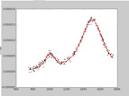

Software Infrastructure
-
-pyre
Computational Frameworks
Models & Simulations
Bindings & Utilities


My Released Software
Writing well-engineered software is hard, but ultimately it pays off. In the end, poorly-engineered software limits the analysis capabilities the user has available, and ultimately becomes a roadblock to new science. I focus on three levels of software: (i) computational models and utilities, (ii) computational frameworks, and (iii) software infrastructure. Well-engineered models not only can provide simulations of real experiments and measurements, but can serve as building blocks in larger multi-scale and multi-physics calculations. Computational frameworks provide an environment for composing large-scale simulations or calculations, such as performing sensitivity analysis for a parameterized materials model within a virtual neutron experiment, or using fitting to predict excited-state molecular conformations from measured time-resolved Raman spectra. Many of the calculations that are scientifically relevant as also computationally challenging. Thus, I have produced software infrastructure that strives to facilitate high-performance parallel and distributed computing in a simple and transparent way, allowing the developer to extend their model analysis to thousands of nodes and across multiple machines with the addition of a few simple lines of code.